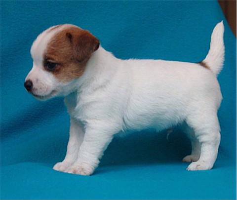

07.11.2004 - Miêdzynarodowa Wystawa w Poznaniu -
OUT OF LAW BILLY THE KID Balao - M³odzie¿owy Zwyciêzca Polski - skoñczy³ te¿ M³odzie¿owy Championat
IZYDOR Medium - Zwyciêzca Polski
OH MY DARLING Balao - M³odzie¿owy Zwyciêzca Polski oraz Najlepszy Junior, równie¿ skoñczy³a M³odzie¿owy Champ.
PERFECT BEAUTY PELARGONIA - skoñczy³a Championat Polski !
17.10.2004 - Czêstochowa - VENDETTA otrzymuje CWC, NSwR, BOB i tym samym koñczy Championat Polski.
03.10.2004 - Na Wystawie w Nowym Dworze Mazowieckim OH MY DARILNG otrzymuje Zwyciêstwo M³odzie¿y i III lokatê na BIS Junior
 19.09.2004 Wystawa Klubowa Dogów Niemieckich w £odzi
19.09.2004 Wystawa Klubowa Dogów Niemieckich w £odziOUT OF LAW BILLY THE KID Balao - Klubowy M³odzie¿owy Zwyciêzca Roku
IZYDOR Medium - Klubowy Zwyciêzca Roku
OH MY DARLING Balao - Klubowy M³odzie¿owy Zwyciêzca Roku oraz II BIS Junior
08.08.2004 - Trakai - Debiut wystawowy OH MY DARLING Balao - I BIS PUPPY !!!
07.08.2004 - Trakai - LEON koñczy INTERCHAMPIONAT !
 06.05.2004 - Data urodzin drugiego miotu Jack Russell Terierów w naszej hodowli.
Imiona 2 ch³opców i 4 dziewczynek zaczynaæ siê bêd¹ na literê Y.
06.05.2004 - Data urodzin drugiego miotu Jack Russell Terierów w naszej hodowli.
Imiona 2 ch³opców i 4 dziewczynek zaczynaæ siê bêd¹ na literê Y.
 17.04.2004 - Ze s³onecznej Italii przyby³ do nas QUIXOTE-B del Regno di Fantasia - w domu PEPE ur. 17.01.2004
17.04.2004 - Ze s³onecznej Italii przyby³ do nas QUIXOTE-B del Regno di Fantasia - w domu PEPE ur. 17.01.2004

10.02.2004 - To data urodzin FOR PLEASURE Of the Hunters Pride. Jak wiêkszoœæ naszych JRT, FORPI przyby³ do nas z holenderskiej hodowli. 19.03.2004 - Katowice - X-LOLA Balao ( w³. Marta Fryc ) w wieku 10 miesiêcy zdobywa tytu³ Zwyciêzca M³odzie¿y oraz
Zwyciêstwo Rasy. III lokata na BIS Junior !!!
19.03.2004 - Katowice - X-LOLA Balao ( w³. Marta Fryc ) w wieku 10 miesiêcy zdobywa tytu³ Zwyciêzca M³odzie¿y oraz
Zwyciêstwo Rasy. III lokata na BIS Junior !!!